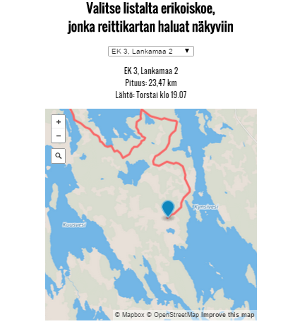
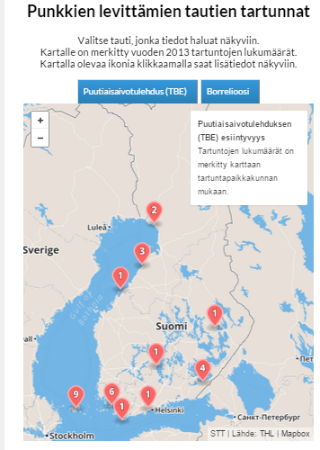

Neste Oil Rallin reittikartat
Visualisointiin on koottu yhteen kaikki Neste Oil Rallin reitit.

Punkkikartta
Kartalla näkyvät puutiasaivotulehduksen esiintyvyys tartuntapaikkakunnan mukaan ja borrelioositartunnat esiintyvyys sairaanhoitopiireittäin.

NHL-kartta
Karttaan on merkitty NHL-joukkueet väreittäin divisioonan mukaan. Merkitsimiä klikkaamalla saa joukkueesta lisää tietoa.